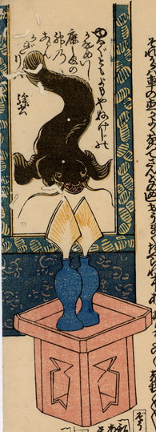

掛軸に描かれた鯰。尾を上にして頭を下にしており、口を開いて、鋭い歯を覗かせている。掛軸の中回しには小判柄の布が用いられている。掛け軸の前には、三方に載った御神酒徳利1対が供えられており、神酒口が差されている。
出典：親書誌：U426_nichibunken_0185：万歳楽身の用心；マンザイラクミノヨウジン／日付：2010／資源識別子：U426_nichibunken_0185_0001_0000
Copyright (c)2010- International Research Center for Japanese Studies, Kyoto, Japan. All rights reserved.